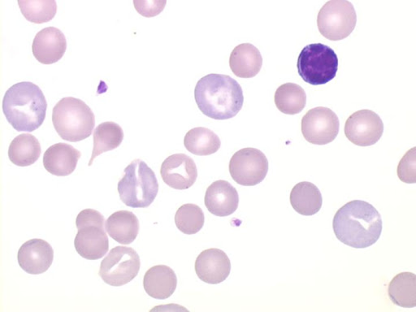
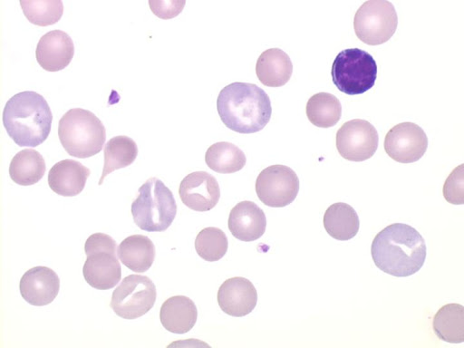
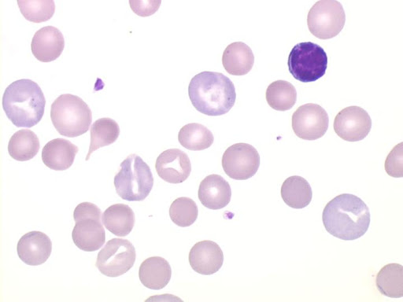
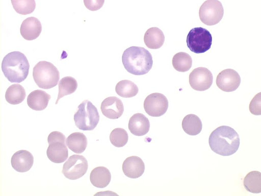

1. Image originale
2. Image niveaux de gris
3. Spectre d'intensité noir
4. Image noir & blanc
5. Erosion/Dilatation
6. Globules blancs (nombre = )
La démarche pour dénombrer les globules blancs sur une image est la suivante :